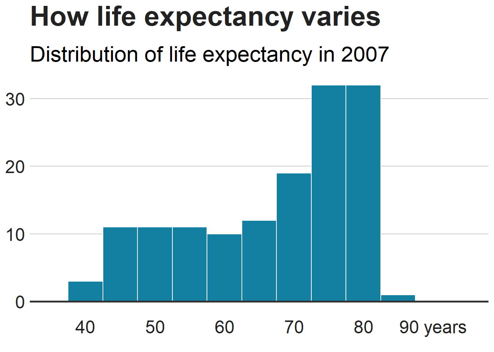

library(tidyverse)
library(gapminder)BBC stijl
r
Samenvatting
Uitleg over de BBC style en mijn aanpassingen daarvan.
Het BBC team heeft een R package bbplot en een bijbehorend kookboek gemaakt om een beter reproduceerbaar proces te ontwikkelen voor het maken van publicatieklare grafieken in de BBC stijl met gebruik van ggplot2. In Figuur 1 zie je een voorbeeld.

De package met de functies voor de bbc stijl, bbplot, moet geladen worden en daarnaast nog een aantal andere packages voor de voorbeelden.
Functies
Package bbplot() heeft twee functies:
bbc_style(): heeft geen argumenten en wordt toegevoegd aan de ggplot pipe workflow nadat je een plot hebt gemaakt. Wat het doet, is over het algemeen de tekstgrootte, het lettertype en de kleur, aslijnen, astekst, marges en vele andere standaard diagramcomponenten in de BBC-stijl maken. De kleuren voor lijnen in een lijndiagram of staven in een staafdiagram zitten niet in de functiebbc_style(), maar moeten expliciet worden ingesteld in de ggplot-diagramfuncties.finalise_plot(): slaat de afbeelding op.
In de package zitten hiervoor de scripts bbc_style.R en finalise_plot.R.
Het gebruik van de package geeft bij mij meerdere waarschuwingen Deze geeft warnings “font family not found in Windows font database”. Welke fonts wel in de windows font database zitten kun je opvragen:
windowsFonts()$serif
[1] "TT Times New Roman"
$sans
[1] "TT Arial"
$mono
[1] "TT Courier New"In de BBC style is Helvetica het gespecificeerde font. Wanneer je in het R script de naam Helvetica vervangt door sans heb je geen problemen. Dit is voor mij reden om niet de originele package bbplot met zijn functies te gebruiken, maar deze functies aan te passen. Hiertoe zijn de twee functies uit de package gekopieerd naar map R en daarna de namen gewijzigd via een voorvoegsel “sw_”. Waarschijnlijk zullen ze later in een eigen package worden opgenomen.
source("R/sw_bbc_style.R")
source("r/sw_finalise_plot.R")bbc_style
Syntax: bbc_style()
Deze functie heeft geen argumenten. Wat de functie in feite doet is dat een aantal argumenten in de theme functie van ggplot2 worden gewijzigd.
mydf <- gapminder %>%
filter(country == "Netherlands")
line_chart <- ggplot(data = mydf, aes(x = year, y = lifeExp)) +
geom_line(colour = "#1380A1", linewidth = 1) +
geom_hline(yintercept = 0, linewidth = 1, colour="#333333") +
bbc_style() +
labs(title = "Langer leven",
subtitle = "Levensverwachting in Nederland 1952-2007")
line_chart
finalise_plot
Syntax: finalise_plot(plot_name, source, save_filepath, width_pixels = 640, height_pixels = 450)
plot_name: de variabelenaam van de grafiek, in het voorbeeld hiervoor is dat “line_chart”source: de tekst voor de bron van de grafiek. Deze wordt in de linker benedenhoek weergegeven.save_filepath: pad en bestandsnaam van de grafiek, inclusief de extensie .png.width_pixels: breedte, default 640px.height_pixels: hoogte, default 450px.logo_image_path: pad en bestandsnaam voor een logo. Deze wordt in de rechter benedenhoek weergegeven. Default een placeholder PNG bestand met een achtergrondkleur gelijk aan de achtergrondkleur van de grafiek. wanneer je geen logo wilt, dan niets specificeren. De package is voorbereid op een brede en dunne afbeelding.
finalise_plot(plot_name = line_chart,
source = "Bron: Gapminder",
save_filepath = "lijngrafiek.png",
width_pixels = 640,
height_pixels = 450)Voorbeelden
multiple_line_df <- gapminder %>%
filter(country == "Netherlands" | country == "China")
multiple_line <- ggplot(multiple_line_df, aes(x = year, y = lifeExp, colour = country)) +
geom_line(linewidth = 1) +
geom_hline(yintercept = 0, linewidth = 1, colour="#333333") +
scale_colour_manual(values = c("#FAAB18", "#1380A1")) +
bbc_style() +
labs(title="Langer leven",
subtitle = "Levensverwachting in Nederland en China")
multiple_linebar_df <- gapminder %>%
filter(year == 2007 & continent == "Africa") %>%
arrange(desc(lifeExp)) %>%
head(5)
#Make plot
bars <- ggplot(bar_df, aes(x = country, y = lifeExp)) +
geom_bar(stat="identity",
position="identity",
fill="#1380A1") +
geom_hline(yintercept = 0, linewidth = 1, colour="#333333") +
bbc_style() +
labs(title="Reunion is highest",
subtitle = "Highest African life expectancy, 2007")
barsstacked_df <- gapminder %>%
filter(year == 2007) %>%
mutate(lifeExpGrouped = cut(lifeExp,
breaks = c(0, 50, 65, 80, 90),
labels = c("Under 50", "50-65", "65-80", "80+"))) %>%
group_by(continent, lifeExpGrouped) %>%
summarise(continentPop = sum(as.numeric(pop)))`summarise()` has grouped output by 'continent'. You can override using the
`.groups` argument.#set order of stacks by changing factor levels
stacked_df$lifeExpGrouped = factor(stacked_df$lifeExpGrouped, levels = rev(levels(stacked_df$lifeExpGrouped)))
#create plot
stacked_bars <- ggplot(data = stacked_df,
aes(x = continent,
y = continentPop,
fill = lifeExpGrouped)) +
geom_bar(stat = "identity",
position = "fill") +
bbc_style() +
scale_y_continuous(labels = scales::percent) +
scale_fill_viridis_d(direction = -1) +
geom_hline(yintercept = 0, linewidth = 1, colour = "#333333") +
labs(title = "How life expectancy varies",
subtitle = "% of population by life expectancy band, 2007") +
theme(legend.position = "top",
legend.justification = "left") +
guides(fill = guide_legend(reverse = TRUE))
stacked_barsDit voorbeeld toont verhoudingen, maar misschien wil je een gestapeld staafdiagram maken met getalswaarden - dit is eenvoudig te wijzigen!
De waarde die aan het position-argument wordt doorgegeven, bepaalt of de gestapelde grafiek verhoudingen of werkelijke waarden weergeeft.
Met position = "fill" krijg je verhoudingen en met position = "identity" krijg je werkelijke waarden.
De werkwijze voor een gegroepeerd staafdiagram is analoog aan die van een gewoon staafdiagram. Je moet alleen position = "identity" wijzigen in position = "dodge" en zet argument fill in aes.
grouped_bar_df <- gapminder %>%
filter(year == 1967 | year == 2007) %>%
select(country, year, lifeExp) %>%
spread(year, lifeExp) %>%
mutate(gap = `2007` - `1967`) %>%
arrange(desc(gap)) %>%
head(5) %>%
gather(key = year,
value = lifeExp,
-country,
-gap)
grouped_bars <- ggplot(grouped_bar_df,
aes(x = country,
y = lifeExp,
fill = as.factor(year))) +
geom_bar(stat="identity", position="dodge") +
geom_hline(yintercept = 0, linewidth = 1, colour="#333333") +
bbc_style() +
scale_fill_manual(values = c("#1380A1", "#FAAB18")) +
labs(title="We're living longer",
subtitle = "Biggest life expectancy rise, 1967-2007")
grouped_bars
hist_df <- gapminder %>%
filter(year == 2007)
ggplot(hist_df, aes(lifeExp)) +
geom_histogram(binwidth = 5, colour = "white", fill = "#1380A1") +
geom_hline(yintercept = 0, linewidth = 1, colour="#333333") +
bbc_style() +
scale_x_continuous(limits = c(35, 95),
breaks = seq(40, 90, by = 10),
labels = c("40", "50", "60", "70", "80", "90 years")) +
labs(title = "How life expectancy varies",
subtitle = "Distribution of life expectancy in 2007")Warning: Removed 2 rows containing missing values (`geom_bar()`).
